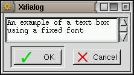
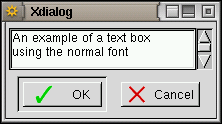
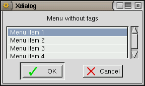
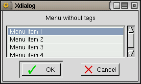
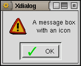
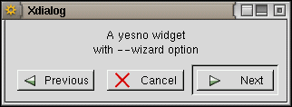
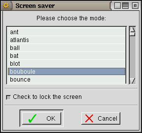

This option allows to use a monospacing font in the text area of tailbox, textbox and editbox widgets.
 
This option is for use with input(s) box widgets (--inputbox, --2inputsbox and --3inputsbox box options). Its effect is to turn the last input field of an inputbox widget into a password entry field (in which every character typed is displayed as a "*"). It is possible to repeat this option twice or three times before --2inputsbox and --3inputsbox so that the last two or the three input fields are turned into password input fields. The --password=1 (respectively, --password=2) syntax allows to set the first (respectively, second) field of a --2inputsbox or --3inputsbox as a password field (but then all the other fields are not password fields). As of Xdialog v2.0.6, a check button (Hide typing) is also setup when this option is in use: it allows to toggle the hiding of the password fields (hiding being on by default).

This option is for use with the combobox widget. Its effect is to allow the user to edit the entry field of the combo box (by default it is not allowed to do so: only one of the items into the combo box pull-down list may be choosed).
These options make a second column to appear on the left of the messages displayed by the logbox widget. This column is used to display the time (with --time-stamp) or date plus time (with --date-stamp) at which each message is received by the logbox. If either of these two options is used, then the column titles ("Time stamp" or "Date - Time", and "Log messages") also appear at the top of the logbox.
This option makes the messages displayed in the logbox widget to appear in reverse order (the last received message being displayed at the top of the messages list).
This option is for use with the logbox widget and instructs Xdialog to remember the last foreground and background colours message line setting so to use it in the next lines until a new colour specification (escape sequence) is received.
This option will make most Xdialog widgets that return results (input(s) boxes, combo box, range(s) boxes, spin(s) boxes, list boxes, menu box, treeview, calendar, timebox) to report regularly these results on Xdialog output stream until the user chooses/enters the definitive result or the widget is closed. As an example, a rangebox can be made to report its current cursor position every 2s. The timeout parameter is in milli-seconds (it must be positive; a zero timeout will make this option to be ignored).
This option will make most Xdialog widgets (all but infobox, gauge and progress) to close automatically (returning 255 as an exit code) after a given timeout, unless the user already closed the box by clicking a button. The timeout parameter is in seconds (it must be positive; a zero timeout will make this option to be ignored).
This option is for use with menubox, checklist and radiolist widgets. Each menu/list item in these widgets is normally preceeded with its <tag>; when using this option, the tags are not displayed.
 

This option is for use with the menubox, checklist, radiolist, buildlist and treeview widgets. It makes these widgets to accept an additional <help> parameter for each item; this parameter is a text string that will be displayed as a tooltip (for checklist, radiolist, buildlist and treeview widgets) when the mouse pointers stays for some time (usaually 0.5s) over an item, or into a status bar (below the menu window of the menubox widget) when an item is selected.
This option is for use with the menubox and allows to select (and move to) a given default row (which tag is <tag>).
This option must be followed by the filename of an icon (in XPM format only). This icon will be displayed on the left of the <text> (provided the following box option accepts such a <text> parameter, which is not the case of the textbox, editbox, tailbox, logbox, fselect and dselect widgets). If the filename does not correspond to a XPM image, the option will be ignored.

This option allows to suppress the OK button from the tailbox and logbox widgets.
This option allows to suppress the Cancel button from all but the infobox, gauge and progress widgets.
This option allows to suppress all the OK, the Cancel, the Help and the Print buttons from the textbox, tailbox, logbox, infobox widgets, as well as the New directory, Delete file and Rename file buttons from the fselect and dselect widgets.
Sets the No or Cancel button to be the default (pre-selected) one. This option has no effect when used with the --wizard option.
See also the (c)dialog compatibility notes.
This option turns Xdialog widgets into "installation wizard" widgets by replacing the Yes or OK button with Next, the No button with Cancel (the Cancel button is not displayed if the --no-cancel option is in force), and by adding a Previous button (which makes the widget to return an exit code of 3 when pressed). This option may apply to all widgets but the msgbox, infobox, gauge and progress widgets.

This option makes a Help button to appear in all but the infobox, gauge and progress widgets, and is to be followed by the help text that will be displayed (in a msgbox) when the Help button is chosen. The help box is set to the same size as the widget from which it was invoked (it is auto-sized if this widget was itself auto-sized). The <help> text may hold "\n" (as for the <text> parameter) so to force help text line splitting. If the help text is an empty string then, when the Help button is pressed, the widget is closed and an exit code of 2 is returned.
Makes a Print button to appear in textbox, editbox and tailbox widgets (provided that the --no-button option was not specified). Hitting the button will make Xdialog to issue a printing command defined at compile time, defaulting to:
lpr -P<printer>
If the <printer> parameter is an empty string, then the -P option is not used and the issued command is:
lpr
The <printer> parameter (that must follow the --print option) gives the name of the printer to use. As of v2.0.7, Xdialog uses a pipe to send the text to the print command. To see what printing command is used by your version of Xdialog, just type:
Xdialog
(without parameter) and look at the last lines in the displayed usage.
Example of a widget with a Print button: 
This option applies to all but the infobox, gauge and progress widgets. It adds a check button (on the left) and a label (on the right) at the bottom of the widget and makes Xdialog to report either "checked" or "unchecked" on its output stream (as the last string for widgets that return strings by themselves) when the OK button is pressed.
The <label> may contain "\n" characters sequences so to force line breaks (it is not possible to auto-wrap this label) and its text justification is not affected by any Xdialog justification option in force.
The <status> parameter is optional and, if "on" (case insensitive), the button will be checked by default. If anything else but "on", or if absent, the button is unchecked by default.

These options allow to change the labels of (respectively) OK or Yes buttons, and Cancel or No buttons in any Xdialog widget using these buttons. These options are ignored if the --wizard transient option is in force.
These options instruct Xdialog to emit a short beep either just before displaying the next widget (--beep) or just after closing it (--beep-after). Both options may be used together and apply to any widget.
This option asks Xdialog to open its widget at an absolute position (in characters) on the screen. It will work only if your window manager does take the application requested window position into account (many ignore it or may be configured so to ignore it). This option is for use when the widget size is given in characters as well (if you give it in pixels, then the --begin option is ignored; give a "-geometry"-like size/position specification instead. E.g.: 400x200+20-30). This option may be used with any widget.
This option is for use with the infobox and gauge widgets. It prevents Xdialog to close its widget when its input stream is put at EOF (use with care as you must ensure that a way remains to close the Xdialog widget !). This may be useful when piping data to Xdialog through a FIFO.
Will give a smooth, flicker free (but significantly slower) scrolling in tailbox and logbox widget. For use in big windows displaying a slowly updated log...
Note: from Xdialog v2.0.4 onwards, the tailbox and logbox are, when passed the name of an actual file as parameter, loading all the current file contents in one go at startup before displaying it; while this is quite fast with the tailbox, it may take quite some time with the logbox (for which many more processing is performed for each line of text). The use of --smooth with the logbox therefore disables this feature (so that a display update is done each time a new line of text is loaded), thus reverting to the pre-v2.0.4 Xdialog versions behaviour.